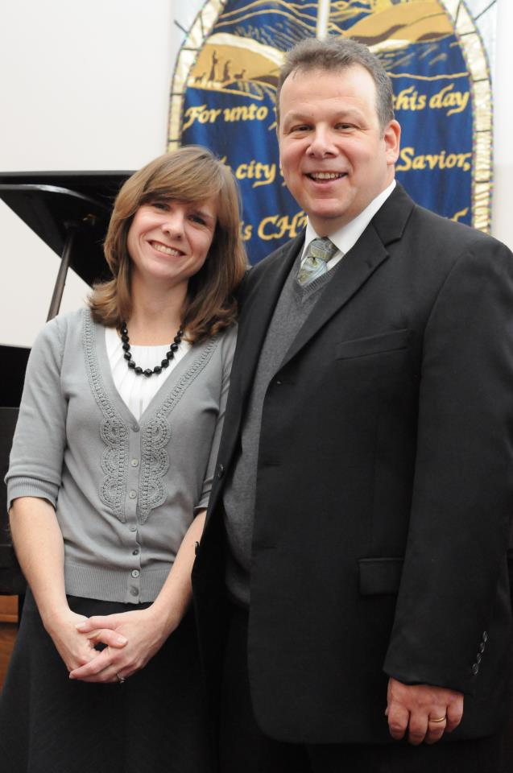
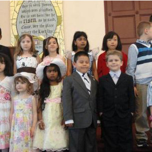
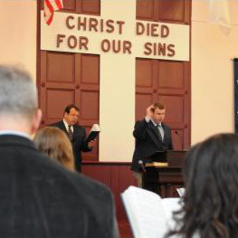
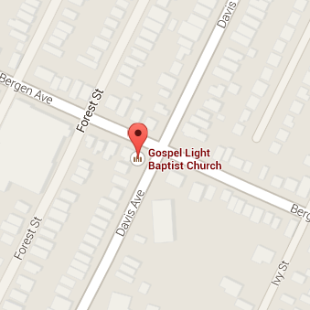

<!DOCTYPE html>
<html>
    <head>
        <meta charset="utf-8">
        <meta http-equiv="X-UA-Compatible" content="IE=edge">
        <title>Gospel Light Baptist Church</title>
        <meta name="description" content="">
        <meta name="viewport" content="width=device-width, initial-scale=1">

        <!-- Place favicon.ico and apple-touch-icon(s) in the root directory -->
        <link href='http://fonts.googleapis.com/css?family=Kotta+One|IM+Fell+DW+Pica|Niconne|Kite+One|Della+Respira|Alef|Belleza|Ruluko|Linden+Hill|Merienda' rel='stylesheet' type='text/css'>
		<link rel="stylesheet" href="css/foundation/foundation.min.css" >
		<link rel="stylesheet" href="css/smint.css" >
        <link rel="stylesheet" href="css/normalize.css">
        <link rel="stylesheet" href="css/atomic.css">
        <link rel="stylesheet" href="css/main.css">
        <link rel="stylesheet" href="css/media_queries.css">
        <script src="js/vendor/modernizr-2.7.1.min.js"></script>
    </head>
    <body onload="setTimeout(function() { window.scrollTo(0, 1) }, 100);">
        <!--[if lt IE 8]>
            <p class="browsehappy">You are using an <strong>outdated</strong> browser. Please <a href="http://browsehappy.com/">upgrade your browser</a> to improve your experience.</p>
        <![endif]-->

        <!-- Add your site or application content here -->
		<!-- header -->
		<!--<div id="menu-overlay" class="pos-f w-100p" style="height: 100%;"></div>
		<div id="side-menu" data-type="side">
			<a href="#" id="side-home" class="p-10 bdb-g tt-u fs-16 ff-pica active" data-smint="true">Home</a>
			<a href="#" id="side-welcome" class="tt-u fs-16 ff-pica"  data-smint="true">Welcome</a>
			<a href="#" id="side-come-join-us" class="tt-u fs-16 ff-pica" data-smint="true">Come Join Us</a>
			<a href="#" id="side-our-beliefs" class="tt-u fs-16 ff-pica" data-smint="true">Our Beliefs</a>
			<a href="#" id="side-our-pastor" class="tt-u fs-16 ff-pica" data-smint="true">Our Pastor</a>
			<a href="#" id="side-what-to-expect" class="tt-u fs-16 ff-pica" data-smint="true">What to Expect</a>
			<a href="#" id="side-way-of-salvation" class="tt-u fs-16 ff-pica" data-smint="true">Way of Salvation</a>
			<a href="#" id="side-contact-us" class="tt-u fs-16 ff-pica" data-smint="true">Contact Us</a>
		</div>-->
		<div id="header" class="bdb-g bdbw-5 bxsh-h pos-a t-0 w-100p z-1000" data-type="top">
			<div class="fl-l" id="mobile-header">
				<!--<a href="#" id="menu-button">
					<div class="bar"> </div>
					<div class="bar"> </div>
					<div class="bar"> </div>	
				</a>-->
				<a href="#" id="top" class="no-bg fl-l"></a>
			</div>
			<div id="menu-items" class="clearfix r-0 pos-a" style="bottom: 17px;">
				<a href="#" class="pr-10 pt-15 pb-15 tt-u fs-16 ff-pica pl-15 active" data-smint="true" data-id="home">Home</a>
				<a href="#" class="pl-10 pr-10 pt-15 pb-15 tt-u fs-16 ff-pica"  data-smint="true" data-id="welcome">Welcome</a>
				<a href="#" class="pl-10 pr-10 pt-15 pb-15 tt-u fs-16 ff-pica" data-smint="true" data-id="come-join-us">Come Join Us</a>
				<a href="#" class="pl-10 pr-10 pt-15 pb-15 tt-u fs-16 ff-pica" data-smint="true" data-id="our-beliefs">Our Beliefs</a>
				<a href="#" class="pl-10 pr-10 pt-15 pb-15 tt-u fs-16 ff-pica" data-smint="true" data-id="our-pastor">Our Pastor</a>
				<a href="#" class="pl-10 pr-10 pt-15 pb-15 tt-u fs-16 ff-pica" data-smint="true" data-id="what-to-expect">What to Expect</a>
				<a href="#" class="pl-10 pr-10 pt-15 pb-15 tt-u fs-16 ff-pica" data-smint="true" data-id="way-of-salvation">Way of Salvation</a>
				<a href="#" class="pl-10 pr-10 pt-15 pb-15 tt-u fs-16 ff-pica" data-smint="true" data-id="contact-us">Contact Us</a>	
			</div> 						
		</div>
		
		
		<div class="top"></div>
		<div id="lighthouse-info" class="clearfix home side-home">
			<h1 class="fs-32 ta-c pos-a op-80 w-100p fs-i c-ow">Reaching Kearny, NJ and the World with the Gospel of Jesus Christ.</h1>
		</div>
		<div id="welcome-box" class="p-50 welcome side-welcome page">
			
			<h1 class="ta-c fs-hu tt-u c-dr pb-15">Welcome</h1>
			<h3 class="fs-i fs-lg ta-c c-lgr">Our Sole Authority is God's Word and All of our Services are Traditional.</h3>
			<h3 class="fs-i fs-22 ta-c c-lgr pb-15">We are a local Independent - Fundamental Baptist Church. Our sole authority is God's Word. All our services are traditional. It is our mission to see our town and the world reached with the gospel of Jesus Christ!  Please take some time and look around on our website and may God bless you.</h3>
		</div>
		<div id="services-box" class="p-50 come-join-us side-come-join-us page">
			<h1 class="ta-c fs-hu tt-u c-ow ff-pica">Come Join Us</h1>
			<div class="row clearfix ff-merienda">
				<div class="large-6 columns p-10 c-ow">
		    		<p class="m-20">I want to take this time to Thank You for visiting our Website. I trust you will find it helpful and informative.If you are looking for an Old-fashioned Baptist Church, with friendly people, you will enjoy Gospel Light Baptist Church. If we can be of any help to you please call or e-mail us.</p>
		    		<p class="m-20">In Christ, <br />Pastor Matthew B. Swiatkowski</p>
		    		<p class="m-20 fs-18">Check Out My Blog <a class="c-lgr" href="www.pastormattnj.com">pastormattnj.com</a></p>
		    	</div>
				<div class="large-6 columns ff-alef">
					<p class="fs-18 ta-c c-ow lh-16 fw-b">Sunday</p>
					<div class="clearfix"><p class="fs-16 fl-l c-ow lh-16 mb-5">Sunday School</p><p class="fs-16 fl-r c-ow lh-16 mb-5">10:00 AM</p></div>
					<div class="clearfix"><p class="fs-16 fl-l c-ow lh-16 mb-5">Main Service</p><p class="fs-16 fl-r c-ow lh-16 mb-5">11:00 AM</p></div>
					<div class="clearfix"><p class="fs-16 fl-l c-ow lh-16 mb-5">Children's Church</p><p class="fs-16 fl-r c-ow lh-16 mb-5">11:20 AM</p></div>
					<div class="clearfix"><p class="fs-16 fl-l c-ow lh-16 mb-5">Spanish Service</p><p class="fs-16 fl-r c-ow lh-16 mb-5">1:30 PM</p></div>
					<div class="clearfix"><p class="fs-16 fl-l c-ow lh-16 mb-5">Evening Service</p><p class="fs-16 fl-r c-ow lh-16 mb-5">6:00 PM</p></div>
					<div class="clearfix"><p class="fs-18 ta-c c-ow lh-16 fw-b">Tuesday</p></div>
					<div class="clearfix"><p class="fs-16 fl-l c-ow lh-16 mb-5">Bible Institute</p><p class="fs-16 fl-r c-ow lh-16 mb-5">6:45 PM</p></div>
					<div class="clearfix"><p class="fs-18 ta-c c-ow lh-16 fw-b">Wednesday</p></div>
					<div class="clearfix"><p class="fs-16 fl-l c-ow lh-16 mb-5">Prayer Meeting</p><p class="fs-16 fl-r c-ow lh-16 mb-5">7:00 PM</p></div>					
					<div class="clearfix"><p class="fs-18 ta-c c-ow lh-16 fw-b">Friday</p></div>
					<div class="clearfix"><p class="fs-16 fl-l c-ow lh-16 mb-5">Bible Study</p><p class="fs-16 fl-r c-ow lh-16 mb-5">7:00 PM</p></div>
				</div>
		    	
	    	</div>
	    	<h4 class="ff-pica c-ow fs-i m-50 fs-24 ta-c">Meet Our Ministries</h4>
	    	<div class="row">
		    	<dl class="tabs w-90p m-a" data-tab>
				  <dd class="active"><a href="#sun">Sunday School</a></dd>
				  <dd><a href="#bi">Bible Institute</a></dd>
				  <dd><a href="#fmc">Fishers of Men Club</a></dd>
				  <dd><a href="#sm">Spanish Ministry</a></dd>
				  <dd><a href="#ya">Youth Activities</a></dd>
				  <dd><a href="#um">Ushers Ministry</a></dd>
				  <dd><a href="#lf">Ladies Fellowship</a></dd>
				</dl>
				<div class="tabs-content bxsh-h bg-w mt-15 mb-15 bdrz-10">
				  <div class="content active" id="sun">
				    Our Sunday school starts at 10:00am on Sunday morning and we offer classes for all ages. From Pre K. to the adults and even a Spanish class for the adults. The lessons are geared towards each age level. The classes are interactive, fun and exciting
					This also includes a children’s church service on Sunday morning. While the regular church service is going on your child is with their peers in a service geared for them. They sing songs that glorify the Lord and learn Bible stories. As well as crafts that emphasize God’s love.
				  </div>
				  <div class="content" id="bi">
				    On Tuesday evening we meet at 7:00pm and go through the Bible. This class is for those who desire a greater knowledge of God’s Word. Here notes are given and test taken. This is the same teaching you would get in a Bible college setting the only difference…….our class is free.
					The fall semester of 2012 we will be studying II Peter. This class does not run in the summer months so please call to make sure class in session
				  </div>
				  <div class="content" id="fmc">
				    Jesus said “Go ye into all the world and preach the Gospel” Every Saturday we go into our “Jerusalem” and take the gospel door to door. This is an exciting time of telling those in need of our great Saviour.
				  </div>
				  <div class="content" id="sm">
				    Our Spanish ministry is led by Jorge Moran. Brother Jorge came to know Christ several years ago and he has a great desire to see Spanish speaking people come to know the Lord. The cults and false teachers have targeted this group, and we by the grace of our Lord want to see them come to know the truth in Christ.
					All of our services are translated into Spanish. We have a Spanish service on friday evenings at 7:00pm and our Spanish church service on Sunday afternoon at 1:30pm. 
				  </div>
				  <div class="content" id="ya">
				    We offer activities for our young people, and these include various outings and trips. Are young people are taught the Word of God and are led by people who are putting into practice the things they teach and preach.
				  </div>
				  <div class="content" id="um">
				    An Usher is the ultimate servant in the church. His only responsibility is to meet the needs of his fellow brothers and sisters in Christ, as well as any visitors that may be present. As a result, ushering is one of the most important services a Christian can perform.
					Servitude is the heart of ushering. You are meeting both the physical and spiritual needs of the church, not to mention representing the church to anyone else who may come walking through the door. Through your actions and demeanor you are a representative not only of the church, but of the Lord Jesus Christ as well.
					Ushering is not just another job in the church, but rather one of the most important and rewarding services one can perform.
				  </div>
				  <div class="content" id="lf">
				    On the first Thursday of every month at 7pm the women of the church gather together. This meeting encompasses many things from Bible study, testimonies, prayer and being an encouragement to each other. Here they plan different activities and outings. You will be blessed and helped in this time.
				  </div>
				</div>
			</div>
	    	
		</div>
		<div id="beliefs-box" class="p-30 our-beliefs side-our-beliefs page">			
			<h1 class="ta-c ff-pica fs-hu tt-u c-dr">Our Beliefs</h1>
			<div class="p-20 bxsh-l bdrz-10 bg-w container">
				<div class="row clearfix">
					<div class="large-4 columns p-20 ff-merienda" >
						<p class="fs-24 tt-u c-lgr fw-b ta-c ff-pica">Scriptures</p>
						<p class="c-dgr fs-14  ff-alef">We believe in the verbal, plenary, divine inspiration of scripture.  Every word was breathed by God, and written by men moved by the Holy Ghost. The bible is our sole authority for faith and practice, and is completely inerrant.  We believe God originally inspired the Word, and perfectly preserved the Word through the 1611 King James Version of the Bible.  There is no need to change or better the Word of God.  It is perfect!(Isaiah 40:8; John 10:35; ll Timothy 3:16; ll Peter 1:19-21)</p>
					</div>
			    	<div class="large-4 columns p-20">
			    		<p class="fs-20 ff-pica tt-u c-lgr fw-b ta-c">God</p>
			    		<p class="c-dgr fs-14 ">There is one supreme God, omnipotent, all powerful, there is nothing He cannot do.  Our God is omniscient, all knowing.  Our God is also omnipresent meaning he is everywhere at all times.  He manifests Himself in three persons: Father, Son and Holy Spirit;  He is one in nature, attributes, power and glory. ( Genesis 1:1; Mark 12:29; Matthew 28:19; ll Corinthians 13:14; John 1:1-4; John 5:17-27; Philippians 2:6-11).</p>
			    	</div>
			    	<div class="large-4 columns p-20">
			    		<p class="fs-20 ff-pica tt-u c-lgr fw-b ta-c">Jesus Christ</p>
			    		<p class="c-dgr fs-14 ">Jesus Christ was begotten by the Holy Spirit, born of the virgin Mary. He is therefore true God and true Man. Jesus Christ is impeccable in His nature and sinless in His life. He died on the cross and shed His precious blood as an atonement for our sins; was buried and rose again the third day. he ascended into Heaven and as our High Priest intercedes for us. He is coming again for His church (Matthew 1:18-25; John 1:1-4, 14; Philippians 2:6-11; Luke 1:26-35; l Timothy 3:16).</p>
			    	</div>
		    	</div>
		    	<div class="row clearfix">
		    		<div class="large-4 columns p-20">
						<p class="fs-24 tt-u c-lgr fw-b ta-c ff-pica">The Holy Spirit</p>
						<p class="c-dgr fs-14 ">The Holy Spirit is a Divine person; the third Person of the Trinity. he is the administrator of the things of God; convicting of sin, revealing Christ, teaching the truth, restraining evil, energizing believers in prayer, worship, and service and is ever present in the believer as our Comforter and Helper (Psalm 139:7-12; John 7:38-39, 15:26, 16:3, 14; Acts 1:8; Romans 8:9; l Corinthians 6:19; ll Thessalonians 2).</p>
					</div>
			    	<div class="large-4 columns p-20">
			    		<p class="fs-24 ff-pica tt-u c-lgr fw-b ta-c">Salvation</p>
			    		<p class="c-dgr fs-14 ">All who believe on Jesus Christ as Saviour are justified on the ground and merit of His shed blood on the cross, and are saved by grace through faith, wholly apart from human merit and works ( John 1:29; Acts 13:38-39; Ephesians 2:8-10; Titus 3:3-8). All who are born again by the Spirit of God through faith in Christ are eternally secure (John 5:24, 10:22-29; ll Timothy 1:12; Philippians 1:6; Romans 8:32-39).</p>
			    	</div>
			    	<div class="large-4 columns p-20">
			    		<p class="fs-24 ff-pica tt-u c-lgr fw-b ta-c">The Church</p>
			    		<p class="c-dgr fs-14 ">The local church is a called out assembly of believers who assemble together in obedience to Christ's command for this age. The local New Testament church is the agency through which God works to carry out the Great Commission to the lost and dying world.  We believe that God has given the church two ordinances baptism by immersion and the Lord’s Supper. ( Matthew 16:18, 18:17, 28:19-20; l Corinthians 1:2; Mark 16:15-16).</p>
			    	</div>
	    		</div>
	    		<div class="row clearfix">
		    		<div class="large-4 columns p-20">
						<p class="fs-24 tt-u c-lgr fw-b ta-c ff-pica">Satan</p>
						<p class="c-dgr fs-14 ">Satan is a real personality; a created being of great beauty and power, the prince of this world, the god of this air, the spirit that now worketh in the children of disobedience.  He will ultimately be judged and cast into the Lake of Fire (Ezekiel 28:12-19; Isaiah 14:12-14; Job 1:1; John 8:44; Revelation 20:1-3, 7-10).</p>
					</div>
			    	<div class="large-4 columns p-20">
			    		<p class="fs-24 ff-pica tt-u c-lgr fw-b ta-c">The Eternal State</p>
			    		<p class="c-dgr fs-14 ">We believe in the bodily resurrection of all the dead; the saved to a life of eternal glory and bliss in Heaven with God; the unsaved to eternal judgment of conscious suffering and woe in the Lake of Fire ( John 5:28-29; Revelation 20:6, 11-15, 21:1-8; Matthew 10:28; ll Thessalonians 1:6-9 ).</p>
			    	</div>
			    	<div class="large-4 columns p-20">
			    		<p class="fs-24 ff-pica tt-u c-lgr fw-b ta-c">The Millenium</p>
			    		<p class="c-dgr fs-14 ">After His personal, bodily, visible return at the end of the tribulation, the Lord Jesus Christ will establish His kingdom on earth and reign as the blessed and only potentate for one thousand years.  He will rule with a rod of iron, and Satan will be bound during this time. (l Timothy 6:14-15; Revelation 20:6-7; Isaiah 65:15-25).</p>
			    	</div>
	    		</div>
	    		<div class="row clearfix">
		    		<div class="large-3 columns p-20">
						<p class="fs-16 tt-u c-lgr fw-b ta-c ff-pica">Separation</p>
						<p class="c-dgr fs-14 ">Satan is a real personality; a created being of great beauty and power, the prince of this world, the god of this air, the spirit that now worketh in the children of disobedience.  He will ultimately be judged and cast into the Lake of Fire (Ezekiel 28:12-19; Isaiah 14:12-14; Job 1:1; John 8:44; Revelation 20:1-3, 7-10).</p>
					</div>
			    	<div class="large-3 columns p-20">
			    		<p class="fs-16 ff-pica tt-u c-lgr fw-b ta-c">Church Separation</p>
			    		<p class="c-dgr fs-14 ">We believe in the bodily resurrection of all the dead; the saved to a life of eternal glory and bliss in Heaven with God; the unsaved to eternal judgment of conscious suffering and woe in the Lake of Fire ( John 5:28-29; Revelation 20:6, 11-15, 21:1-8; Matthew 10:28; ll Thessalonians 1:6-9 ).</p>
			    	</div>
			    	<div class="large-3 columns p-20">
			    		<p class="fs-16 ff-pica tt-u c-lgr fw-b ta-c">Music</p>
			    		<p class="c-dgr fs-14 ">After His personal, bodily, visible return at the end of the tribulation, the Lord Jesus Christ will establish His kingdom on earth and reign as the blessed and only potentate for one thousand years.  He will rule with a rod of iron, and Satan will be bound during this time. (l Timothy 6:14-15; Revelation 20:6-7; Isaiah 65:15-25).</p>
			    	</div>
			    	<div class="large-3 columns p-20">
			    		<p class="fs-16 ff-pica tt-u c-lgr fw-b ta-c">The Tribulation</p>
			    		<p class="c-dgr fs-14 ">After His personal, bodily, visible return at the end of the tribulation, the Lord Jesus Christ will establish His kingdom on earth and reign as the blessed and only potentate for one thousand years.  He will rule with a rod of iron, and Satan will be bound during this time. (l Timothy 6:14-15; Revelation 20:6-7; Isaiah 65:15-25).</p>
			    	</div>
	    		</div>
    		</div>
		</div>
		<div id="pastor-box" class="p-50 our-pastor side-our-pastor page">
			<h1 class="ta-c fs-hu tt-u c-dr ff-ruluko">Our Pastor</h1>
			<div class="row">
				<div class="row clearfix ff-merienda">
					<div class="large-6 columns p-10 c-ow">
			    		<p class="ta-c">
			    			
			    		</p>
			    	</div>
					<div class="large-6 columns ff-alef p-10">
						<p class="fs-16 lh-20 pt-15 ">Pastor Matthew was born and raised in Kearny NJ and it was here in 1974 that he trusted Jesus Christ as his personal Saviour. In 1982 while a senior in High school he surrendered his life to serve the Lord. He began working in the church under the leadership of Pastor Harold Elting. In 1988 the Lord led him to Florida where he attended Trinity Baptist College. It was there he met his future wife Ann Renee Greaves. They were married in June of 1989. God has blessed them with four children, Matthew, Melanie, Ethan and Evan.</p>
						<p class="fs-16 lh-20">In 1995 he became the Pastor of Gospel Light Baptist Church. It’s his desire to preach the unsearchable riches of Christ Jesus and to reach his home town for his Saviour.</p>
					</div>
			    	
		    	</div>
			</div>
		</div>
		<div id="expect-box" class="p-30 what-to-expect side-what-to-expect page">
			<h1 class="ta-c ff-georgia fs-hu tt-u c-dbr">What to Expect</h1>
			<div class="row">
				<div class="large-3 columns p-10 c-ow">
		    		<p class="ta-c "></p>
		    		<p class="ff-pica fs-16 ta-c fw-b tt-u c-lbr c-dbr">What do you have for children?</p>
		    		<p class="ta-j c-dbr p-10">There is something special for every child at GLBC.  We have a fully staffed nursery and a notification system so you can know that your child  is being cared for.  We have classes for children ages 3 through 6th grade.</p>
		    	</div>
				<div class="large-3 columns ff-alef p-10">
					<p class="ta-c "></p>
		    		<p class="ff-pica fs-16 ta-c fw-b tt-u c-dbr">What are your services like?</p>
		    		<p class="ta-j c-dbr p-10">Our services are encouraging, and we sing uplifting music.  We have specials in many of the services from soloists, and ensemblesWe have helpful challenging preaching, and each service is about an hour long.  </p>
				</div>
				<div class="large-3 columns ff-alef p-10">
					<p class="ta-c "></p>
		    		<p class="ff-pica fs-16 ta-c fw-b tt-u c-ow">Should I participate in the offering?</p>
		    		<p class="ta-j c-dbr p-10">We don’t invite you to Gospel Light Baptist Church for your offering. We want our service to be a gift to you. We hope you will find in this place a warm family spirit, truth from God’s Word, and a place where you can grow in God’s grace. Please don’t feel any obligation to participate in the offering as a guest.
</p>
				</div>
				<div class="large-3 columns ff-alef p-10">
					<p class="ta-c "></p>
		    		<p class="ff-pica fs-16 ta-c fw-b tt-u c-ow">Where are you located?</p>
		    		<p class="ta-j c-dbr p-10">We are located on the intersection of Davis Avenue and Bergen Avenue in Kearny. We are just minutes from the NJ Turnpike and Interstate 280.</p>
				</div>
			</div>
		</div>
		<div id="salvation-box" class="p-50 way-of-salvation side-way-of-salvation page">
			<h1 class="ta-c ff-pica fs-hu tt-u c-ow">Way of Salvation</h1>
			<h3 class="ta-c fs-lgr fs-i c-ow">Do you know Christ as your personal Savior?</h3>
			<h3 class="ta-c fs-lg fs-i c-ow">Have you ever received the Lord Jesus Christ into your life?</h3>
			<div class="row">
				<div class="large-4 columns">
					<div class="m-20 p-5">
						<h5 class="ta-c fw-b c-ow">Realize That God Loves You and the Whole World</h5>
						<div class="line"> </div>
						<div class="bg-w p-10 bxsh-h">
							<p class="c-dgr">God loves you and has a plan for your life.</p>
							<p class="fs-i c-dgr fw-b">For God so loved the world, that he gave his only begotten Son, that whosoever believeth in him should not perish, but have everlasting life. John 3:16</p>	
						</div>						
					</div>
				</div>
				<div class="large-4 columns">
					<div class="m-20 p-5">
						<h5 class="fw-b ta-c c-ow">The Bible Says That All Men Are Sinners</h5>
						<div class="line"> </div>
						<div class="bg-w p-10 bxsh-h">
							<p class="fs-i c-dgr fw-b">For all have sinned, and come short of the glory of God. Romans 3:23</p>
							<p>God made man in His own image. He gave man the ability to choose right from wrong. We choose to sin. Our sins keep us from God.</p>
						</div>
					</div>
				</div>
				<div class="large-4 columns">
					<div class="m-20 p-5">
						<h5 class="fw-b ta-c c-ow">God's Word Also Says That Sin Must Be Paid For</h5>
						<div class="line"> </div>
						<div class="bg-w p-10 bxsh-h">
							<p class="fs-i fw-b">For the wages of sin is death.... Romans 6:23</p>
							<p>Wages means payment. The payment of our sin is death and hell, separation from God forever. If we continue in our sin, we shall die without Christ and be without God forever.</p>
						</div>
					</div>					
				</div>
			</div>
			<div class="row">			
				<div class="large-4 columns">
					<div class="m-20 p-5">
						<h5 class="fw-b ta-c c-ow">The Good News Is That Christ Paid For Our Sins</h5>
						<div class="line"> </div>
						<div class="bg-w p-10 bxsh-h">
							<p>All of our sins were laid on Christ on the cross. He paid our sin debt for us. The Lord Jesus Christ died on the cross, and He arose from the dead. He is alive forevermore.</p>
	 						<p class="fs-i fw-b">But God commendeth his love toward us, in that, while we were yet sinners, Christ died for us. Romans 5:8</p>
						</div>
					</div>
				</div>
				<div class="large-4 columns">
					<div class="m-20 p-5">
						<h5 class="fw-b ta-c c-ow">We Must Personally Pray And Receive Christ By Faith</h5>
						<div class="line"> </div>
						<div class="bg-w p-10 bxsh-h">
							<p>The Bible says,</p>
							<p class="fs-i fw-b">For whosoever shall call upon the name of the Lord shall be saved. Romans 10:13</p>
						</div>
					</div>
				</div>
				<div class="large-4 columns">
					<div class="m-20 p-5">
						<h5 class="fw-b ta-c c-ow">Pray And Receive Christ As Your Savior</h5>
						<div class="line"> </div>
						<div class="bg-w p-10 bxsh-h">
							<p>Lord, I know that I am a sinner. If I died today, I would not go to heaven. Forgive my sin, come into my life and be my Savior. Help me live for you from this day forward. In Jesus Name, Amen.</p>
							<p>The Bible says,</p>
							<p class="fs-i fw-b">For whosoever shall call upon the name of the Lord shall be saved. Romans 10:13</p>
						</div>
					</div>
				</div>
			</div>
		</div>
		<div id="contact-box" class="p-50 bg-dgr contact-us side-contact-us page">
			<h1 class="ta-c ff-georgia fs-hu tt-u c-lgr ">Contact Us</h1>
			<div class="w-40p p-20 bd bdc-dgr bdrz-10 bd-dgr form" style="margin: auto;">
				<form>
					<input type="text" name="name" placeholder="Name" class="bdrz-5 bd-dgr bg-t p-10 c-ow w-100p mb-15 fs-18" />
					<input type="email" name="email" placeholder="E-mail" class="bdrz-5 bd-dgr bg-t p-10 c-ow w-100p mb-15 fs-18" />
					<textarea name="message" placeholder="Message" rows="10" class="bdrz-5 bd-dgr bg-t p-10 c-ow w-100p mb-15 fs-18"> </textarea>
					<input type="submit" value="Send" class="bdrz-5 p-10 w-100p bd-dgr c-ow fs-18 bg-t" id="submit-button" />
				</form>
			</div>			
			<div class="divider"></div>
			<div id="social-buttons" class="row w-50p ml-a mr-a mt-15 mb-15">
				<div class="small-4 columns">
					<a href="#" class="ta-c d-b" style="width: 60px;margin:auto;">
						<span class="d-b m-a"></span>
					</a>
				</div>
				<div class="small-4 columns">
					<a href="#" class="ta-c">
						
					</a>
				</div>
				<div class="small-4 columns">
					<a href="#" class="ta-c">
						
					</a>
				</div>
			</div>
		</div>
		
        <script src="js/plugins.js"></script>
        <script src="js/main.js"></script>
        <script src="js/vendor/jquery-2.1.0.min.js"></script>
        <script src="js/vendor/foundation.min.js"></script>
        <script src="js/vendor/foundation.accordion.js"></script>
        <script src="js/vendor/foundation.tab.js"></script>
        <script src="js/vendor/foundation.equalizer.js"></script>
		<script src="js/vendor/jquery.smint.js"></script>
        <!-- Google Analytics: change UA-XXXXX-X to be your site's ID. -->
        <script>
            //(function(b,o,i,l,e,r){b.GoogleAnalyticsObject=l;b[l]||(b[l]=
            //function(){(b[l].q=b[l].q||[]).push(arguments)});b[l].l=+new Date;
            //e=o.createElement(i);r=o.getElementsByTagName(i)[0];
            //e.src='//www.google-analytics.com/analytics.js';
            //r.parentNode.insertBefore(e,r)}(window,document,'script','ga'));
            //ga('create','UA-XXXXX-X');ga('send','pageview');
        </script>
        <script type="text/javascript">
        	$(document).ready( function() {
			    $('#header').smint({
			    	'scrollSpeed' : 1000
			    });		
			    
			    
			    
			    $("#side-menu a").click(function(){
			    	$("#menu-overlay").animate({opacity: .0,filter: "alpha(opacity=0)"});
		    		$("#menu-overlay").delay(300).hide();
		    		$("#side-menu").animate({left: -250}, 300);
		    		$("#menu-button").attr("data-open", "false");
			    });
			    	    
			});
			$(document).foundation();
			
        </script>
    </body>
</html>
